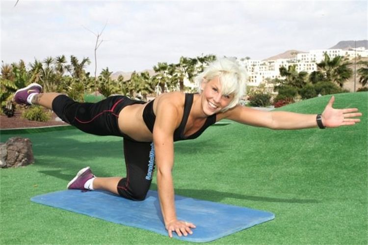
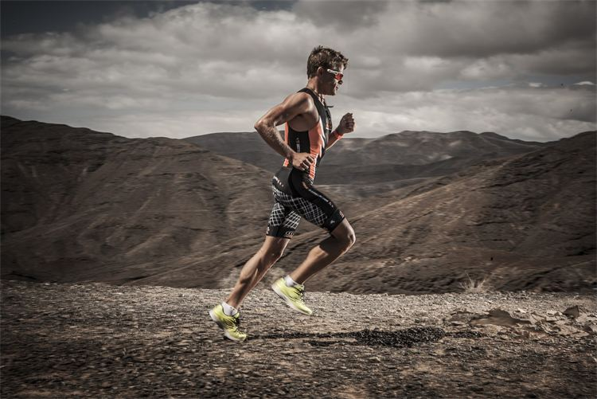

Om oss
Företaget Dragstra Sports Promotion som startades 2013 är baserat på bredden av kunskap och erfarenhet inom Hälsa och träning. Vi lägger stor vikt i hur vår erfarenhet som bl.a. Elitidrottsman och Hälsovetare kan tillämpas som Service till dig. Vårt mål är att uppnå ditt mål inom alla våra erbjudna områden. Vi är beredda att hjälpa dig när det gäller Cykelköp, Coaching, "Retul" Bike Fiting, Temadagar och mycket annat. Vi är beredda att möta dina behov och tillsammans uppnå ett gott resultat!
Annie Karlsson Dragstra
Med en bakgrund som Profesionell Gruppträningsinstruktör på bl.a. Apollos populära träningsresort Playitas och Actic Kalmar samt Universitetsutbildning inom Hälsa och träning kan Annie hjälpa dig med allt från styrketräning till allmäna hälsoråd. Är du intresserad av att få livsstilscoaching eller gruppträning kontakta gärna oss för mer info och bokning.
Luke Dragstra
Luke Dragstra från Kanada har över 20 genomförda Ironman i bagaget och en bästa tid på 8 tim och 13 min. Som aktiv F.D Elittriathlet kan Luke erbjuda dig som vill uppnå ett mål inom Triathlon vägledning genom coaching, temadagar - intro till triathlon mm. Genom sin erfarenhet är han specialiserad på kunskap inom landsvägs- och tempocyklar, och jobbar även tillsammans med Engelska cykelmärket Planet X och On One. I samarbete med Planet X erbjuder Luke även "Retul Bike Fiting" , Läs mer under våra flikar. Dragstra Sports Promotion är baserat i Tålebo, 8 km från Mönsterås - "in the middle of nowhere".. Då företaget är nystartat finns planer att bygga en butik under 2014 där målet är att ha ett brett utbud av cyklar som du som kund ska kunna komma och testa för att hitta just den modell du söker - till marknaden bästa priser. Tills vidare finns givetvis möjlighet att genom tidbokning besöka oss och se vårt utbud. Under sommarsäsong är vi ute på tävlingar/mässor runt om i landet för även där nå ut till fler personer som är intresserade av våra produkter. Vilka event vi besöker uppdateras under "Senaste nytt", håll utkik! Vi är flexibla när det gäller service, kontakta oss för att veta mer om just det du undrar över eller läs mer om våra tjänster i flikarna till vänster.